Shading, Highlighting and Color Mapped Normals¶
Any constant color 3D surface object displayed on a 3D axis will appear as a flat 2D surface without additional surface coloring to visualize the 3 dimensional shape of the surface. S3Dlib provides three methods of providing this visualization:
- shading
- highlighting
- surface normal color mapping
All three methods use the surface normals to compute a color based on a direction of incident light relative to the coordinate axes. These object methods have one argument called direction which is a 3D array in x,y,z coordinates for a vector pointing to the incident light source. Examples of several direction values on the effect of object illumination is shown below.
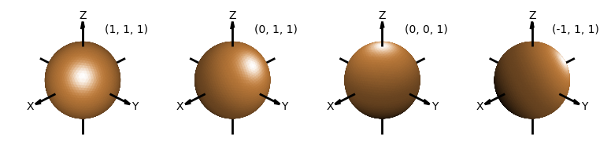The default Matplotlib 3D view uses an elevation and azimuth of 30 and -60, respectively. Considering this default view, the default value for the direction argument was selected as (1,0,1). Using these defaults, the object plot appears as below.
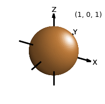Note
The shading and highlighting methods will augment the current coloring of the surface, whereas the surface normal color mapping will reassign the surface color.
In the following guide, all plots use the direction of [1,0.2,1] with the default Matplotlib view.
Note
When the illumination source needs to be relative to the viewer instead of the x,y,z coordinate system, the direction argument may be calculated using the ‘rtv’ method described in the Illumination Source guide section.
Shading¶
The surface object method for shading takes three named parameters and is called by:
surface.shade(depth, direction, contrast)
The return value is the shaded surface object. The depth argument, with default value of 0, has the range of 0 to 1. The contrast argument, with default value of 1, has the range of 0.1 to 3.
The depth is a multiplier which reduces the initial color value of each surface triangle based on the surface normal relative to the direction. The color values are reduced from no reduction to zero (e.g. black) for depths decreasing from 1 to 0. The following figure shows the effect of depth for five different values on how surface color after shading is applied using the default value of 1 for contrast.
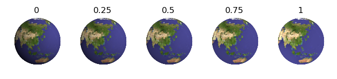With a depth equal to one, value is reduced linearly with the relative normal direction. The contrast will apply the shading in a non-linear method for values other than unity. The following figure shows the effect of contrast for various values above and below 1. In all cases, the default value of 1 was used for for depth.
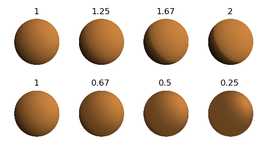Highlighting¶
The surface object method for highlighting takes three named parameters and is called by:
surface.hilite(height, direction, focus)
The return value is the highlighted surface object. The height argument, with default value of 1, has the range of 0 to 1. The focus argument, with default value of 1, has the range of 0.1 to 3.
The height is a multiplier which increases the initial color value and reduces the saturation of each surface triangle based on the surface normal relative to the direction. Only surfaces with a positive component to the direction are highlighted (i.e. no highlighting occurs on the ‘back’ faces). The color values are highlighted from no highlighting to white for height increasing from 0 to 1. The following figure shows the effect of height for five different values on how surface color after shading is applied using the default value of 1 for focus.
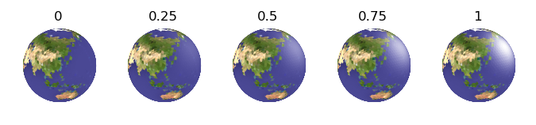With a height equal to one, highlighting is reduced linearly with the relative normal direction. The focus will apply the highlighting in a non-linear method for values other than unity. The following figure shows the effect of focus for various values above and below 1. In all cases, the default value of 1 was used for height.
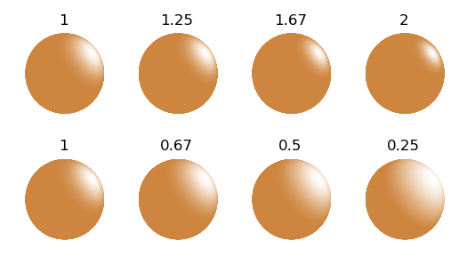Color Mapping Normals¶
The surface object method for color mapping using the surface normals takes two named parameters and is called by:
surface.map_cmap_from_normals(cmap, direction)
The return value is the colored surface object. The cmap argument is a color map or registered color map name. If no cmap argument is given, the default value will be the value of the cmap named argument given in the surface object’s constructor. If the constructor’s cmap argument is not assigned, the default value will be the Matplotlib default colormap named ‘viridis’. For example, the following shows the visualization using this default.
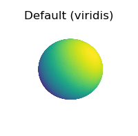Matplotlib provides numerous built-in colormaps and an excellent tutorial on Choosing Colormaps. The ‘sequential’ built-in maps are particularly useful for geometric visualizations since they are perceived with increasing lightness through the colormap. This is also beneficial when grey-scale printing.
The following figure shows various Matplotlib colormaps used for mapping. The first four on the right are sequential. The ‘hsv’ color map, not being sequential, demonstrate the ineffectiveness of using this map to visualize geometry.
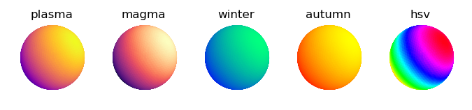Shading a uniformly colored surface has a similar visual effect as color mapping the normals. However, color mapping provides a method of casting the shadow surface with a color rather than decreasing the color value. A comparison of these two methods for visualizing the surface geometry is shown below.
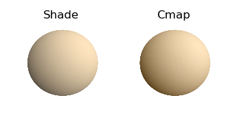The script to produce these two figures are given below. First, for shading a uniform colored surface:
color = [1,.9,.75]
SphericalSurface(3,color=color).shade(direction=[1,0.2,1])
whereas for color mapping the normals:
cmap = rgb_cmap_gradient( [0.25,0.15,0], [1,.9,.75] )
SphericalSurface(3).map_cmap_from_normals(cmap, direction=[1,0.2,1])
The effect is to change the darker color in shading, which is black, to the lowest color in the color map ( for this case, [0.25,0.15,0] ).
Combined Example¶
All three methods can be applied to a surface object with the restriction that the colormap operation is applied first to set the surface coloration. An example using all three is shown below.
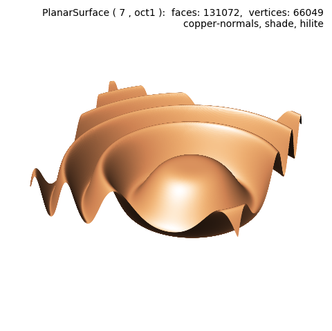import numpy as np
from matplotlib import pyplot as plt
import s3dlib.surface as s3d
#.. Shade: Combined Example
# 1. Define function to examine .....................................
def wavefunc(xyz) :
x,y,z = xyz
X = 3*x-1
Y = 3*y-1
Z = np.cos( X**2 + Y**2 )/5
return x,y,Z
# 2. Setup and map surfaces .........................................
rez = 7
wave = s3d.PlanarSurface(rez, basetype='oct1')
wave.map_geom_from_op( wavefunc )
wave.map_cmap_from_normals( 'copper' )
wave.shade()
wave.hilite(focus=2)
# 3. Construct figure, add surface, plot ............................
fig = plt.figure(figsize=plt.figaspect(1))
info = str(wave) + '\n' + wave.cmap.name + '-normals, shade, hilite'
fig.text(0.975,0.975,info, ha='right', va='top', multialignment='right')
ax = plt.axes(projection='3d')
minmax = (-.8, 0.8)
ax.set(xlim=minmax, ylim=minmax, zlim=minmax )
ax.set_axis_off()
ax.view_init( azim=20 )
ax.add_collection3d(wave)
fig.tight_layout()
plt.show()
In combinaton with a random variation in the surface coordinates using a geometric operation, shading and hilite provide a texturing effect. This can be applied to the base surface and then subsequent transformation can be applied before the shading and highlighting. A simple example is shown below and also used in the Surface Texture example.
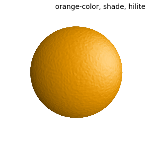import numpy as np
from matplotlib import pyplot as plt
import s3dlib.surface as s3d
#.. Shade: Combined Example 2
# 1. Define function to examine .....................................
def randfunc(rtp) :
r,t,p = rtp
sigma = 0.005
R = r + sigma*np.random.rand( len(r) )
return R,t,p
# 2. Setup and map surfaces .........................................
rez = 5
surface = s3d.SphericalSurface(rez,color='orange')
surface.map_geom_from_op(randfunc).shade(0.2).hilite(0.5)
# 3. Construct figure, add surface, plot ............................
fig = plt.figure(figsize=(3,3))
info = 'orange-color, shade, hilite'
fig.text(0.975,0.975,info, ha='right', va='top', multialignment='right')
ax = plt.axes(projection='3d')
minmax = (-.8,.8)
ax.set(xlim=minmax, ylim=minmax, zlim=minmax)
ax.set_axis_off()
ax.view_init( azim=-55)
ax.add_collection3d(surface)
fig.tight_layout()
plt.show()